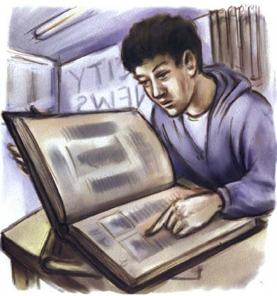
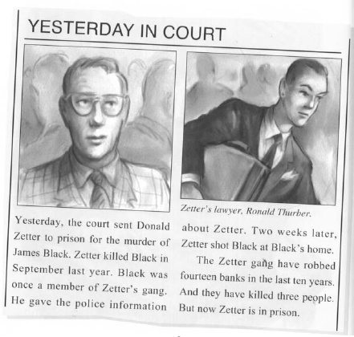
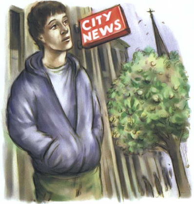

2
Câu chuyện trên báo
Pete nhìn kỹ bức ảnh. Trong ảnh, có hai người đàn ông đang đứng trong một nghĩa trang. Có một số bia mộ trong ảnh. Một phần nhỏ của nhà thờ cũng có trong ảnh. Phía sau những người đàn ông có một cái cây to. Bên cạnh cái cây có một cánh cổng màu xanh lá cây nhỏ trong bức tường. Pete tự đặt ra một số câu hỏi.
‘Nhà thờ đó ở đâu nhỉ?’ anh tự hỏi. ‘Người đàn ông cao và gầy kia là ai? Tôi biết gương mặt của người đàn ông ấy - tôi chắc chắn về điều đó. Liệu ông ta có phải người nổi tiếng không?’
‘Tôi đã thấy ảnh của ông ấy trên báo!’ Pete tự nhủ. ‘Nhưng khi nào tôi thấy thế? Tôi cần xem lại một số báo cũ của City News.’
City News là tờ báo buổi tối của thành phố.
Pete nhìn đồng hồ ở trung tâm thương mại. Anh phải đến trường đại học. Nhưng anh lo lắng cho cô gái. Anh nghĩ ngợi một hồi. Cuối cùng, anh đã đưa ra quyết định.
‘Cô gái đang sợ điều gì đó,’ anh nghĩ. ‘Cô ấy quan trọng hơn trường đại học!’

Tòa soạn của City News ở bên kia thành phố. Pete rời trung tâm thương mại và bắt đầu đi bộ. Anh nghĩ đến chiếc phong bì nâu dày trong bức ảnh. Có gì bên trong không nhỉ? Giấy tờ? Tiền?
‘Tại sao cô gái lại chụp ảnh hai người đàn ông?’ Pete tự hỏi. ‘Và tại sao người đàn ông to lớn lại muốn có bức ảnh?’
Pete đến tòa soạn của City News. Anh bước vào tòa nhà. Có một cái bàn ở góc căn phòng lớn. Trên mặt bàn có bốn cuốn sách rất dày. Trong những cuốn sách này có chứa các ấn bản cũ của tờ City News.
Pete ngồi xuống và mở một cuốn sách.

Trong ba mươi phút tiếp theo, Pete lật các trang báo của tờ City News. Anh xem hết tất cả các bức ảnh trong mỗi tờ báo.
‘Phải chăng mình đã nhầm?’ anh nghĩ. ‘Sao mình không tìm thấy --’
Và rồi, anh đã tìm thấy bức ảnh!
Tờ báo đã ra được gần hai tháng. Trong bức ảnh, người đàn ông cao và gầy đang bước ra khỏi một tòa nhà lớn. Dòng chữ viết bên dưới bức ảnh của người đàn ông cao và gầy là - Luật sư của Zetter, Ronald Thurber.
‘Đúng rồi! Chính là ông ta!’ Pete nghĩ.

Pete đọc xong về Donald Zetter. Anh nhìn lại bức ảnh của cô gái - bức ảnh chụp hai người đàn ông trong nghĩa trang.
‘Thurber là luật sư của Donald Zetter,’ Pete nghĩ. ‘Người đàn ông to lớn kia có phải là thành viên trong băng nhóm của Zetter không?’
Pete đóng cuốn sách báo lại và bước ra khỏi tòa soạn.
‘Bây giờ mình phải cố gắng tìm cô gái,’ anh nghĩ. ‘Nhưng bằng cách nào?’
